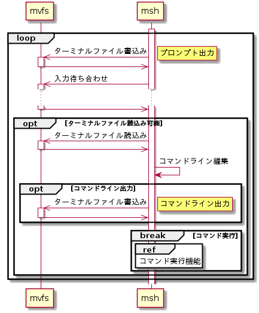
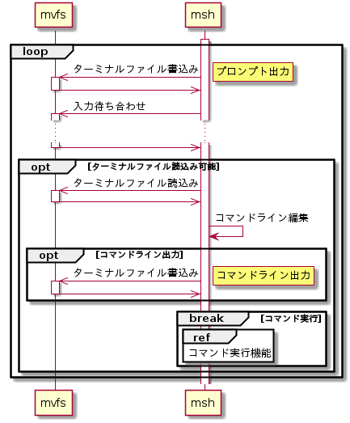

コマンド入力機能
プロンプトを出力してユーザからのコマンド入力を促し、改行コードを入力するまでコマンドライン編集を可能にする。シーケンスを以下に示す。
シーケンス


プロンプト出力
プロンプト「[msh]$ 」をターミナルファイルに出力する。出力は、mvfsライブラリのLibMvfsWrite()を用いる。設定パラメータを以下に示す。
LibMvfsWrite()設定パラメータ
| # | 引数名 | 設定値 |
| 1 | fd | (ターミナルファイルのFD) |
| 2 | *pBuffer | "\e[1m\e[92m[msh]\e[97m$\e[0m " |
| 3 | bufferSize | 25 |
| 4 | *pWriteSize | (書込みサイズ格納先ポインタ) |
| 5 | *pErrNo | NULL |
入力待ち合わせ
ターミナルファイルからの入力を待ち合わせる。待ち合わせはmvfsライブラリのLibMvfsSelect()を用いる。設定パラメータを以下に示す。
LibMvfsSelect()設定パラメータ
| # | 引数名 | 設定値 |
| 1 | *pReadFds | (ターミナルファイルのFDが登録されたFDリスト) |
| 2 | *pWriteFds | NULL |
| 3 | timeout | 0 |
| 4 | *pErr | (エラー要因格納先ポインタ) |
ターミナルファイル読込み
ターミナルファイル読込み可能である場合は、ターミナルファイルを読み込む。読込みはmvfsライブラリのLibMvfsRead()を用いる。設定パラメータを以下に示す。
LibMvfsRead()設定パラメータ
| # | 引数名 | 設定値 |
| 1 | fd | (ターミナルファイルのFD) |
| 2 | *pBuffer | (データ格納先ポインタ) |
| 3 | bufferSize | 1 |
| 4 | *pReadSize | (読込みサイズ格納先ポインタ) |
| 5 | *pErrNo | (エラー要因格納先ポインタ) |
コマンドライン編集
文字の削除やカーソルの移動などを処理してコマンドラインを編集する。ターミナルファイルから入力したコードに対応する編集処理とターミナルファイル出力の一覧を以下に示す。
コマンドライン編集コード一覧
| コード | 概要 | 処理 | 出力 |
| \b | Backspace | カーソル位置1つ前の文字を削除する。続く文字があれば前に詰める。 | (編集処理内容による) |
| \r | Carriage Return |
コマンドライン編集を終了し、コマンドを実行する。 | \r\n |
| \x7F | Delete | カーソル位置の文字を削除する。続く文字があれば前に詰める。 | (編集処理内容による) |
| \e[C | → | カーソル位置を1つ右に移動する。カーソル位置が文字列最後尾の場合は無視する。 | \e[C または、出力無し |
| \e[D | ← | カーソル位置を1つ左に移動する。カーソル位置が文字列先頭の場合は無視する。 | \e[D または、出力無し |
ターミナルファイルへの出力はmvfsライブラリのLibMvfsWrite()を用いる。設定パラメータを以下に示す。
LibMvfsWrite()設定パラメータ
| # | 引数名 | 設定値 |
| 1 | fd | (ターミナルファイルのFD) |
| 2 | *pBuffer | (出力データ格納先ポインタ) |
| 3 | bufferSize | (出力データサイズ) |
| 4 | *pWriteSize | (書込みサイズ格納先ポインタ) |
| 5 | *pErrNo | NULL |